Kmeans shlukování – Vývoj
Generace 0


Generace 1
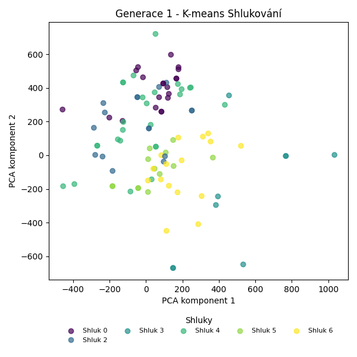

Posun centroidů mezi generací 0 → 1:
- Shluk 0: 546.8921
- Shluk 1: 728.7577
- Shluk 2: 835.7594
- Shluk 3: 669.2595
- Shluk 4: 785.3930
- Shluk 5: 698.7031
Generace 2
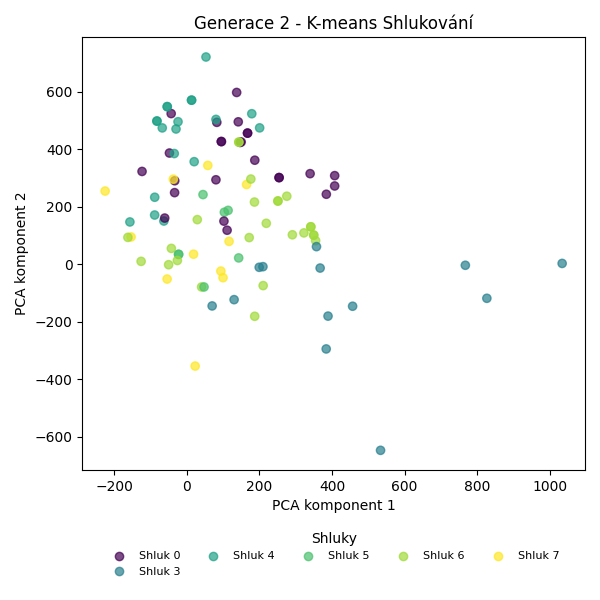
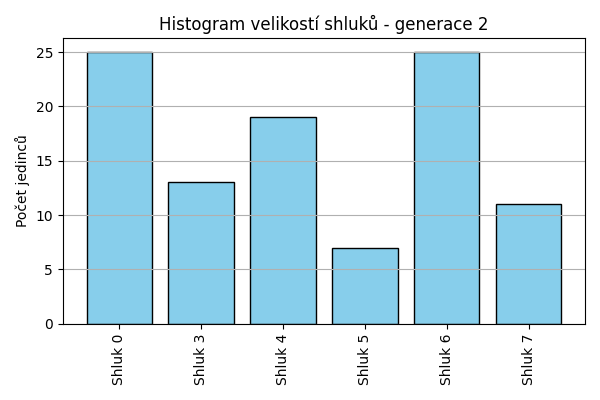
Posun centroidů mezi generací 1 → 2:
- Shluk 0: 207.3198
- Shluk 1: 742.2719
- Shluk 2: 998.1729
- Shluk 3: 670.9471
- Shluk 4: 657.2354
- Shluk 5: 657.9691

Generace 3


Posun centroidů mezi generací 2 → 3:
- Shluk 0: 313.8427
- Shluk 1: 340.1056
- Shluk 2: 475.3098
- Shluk 3: 710.6389
- Shluk 4: 383.3943
- Shluk 5: 781.7503
Generace 4


Posun centroidů mezi generací 3 → 4:
- Shluk 0: 210.0917
- Shluk 1: 490.7417
- Shluk 2: 202.4848
- Shluk 3: 175.8828
- Shluk 4: 637.1379
- Shluk 5: 127.4670

Generace 5
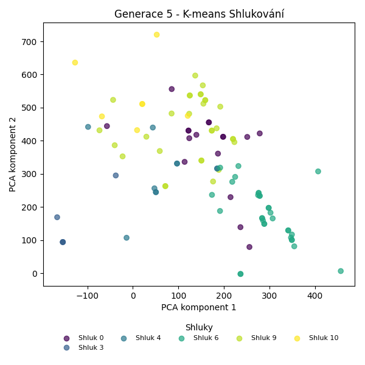

Posun centroidů mezi generací 4 → 5:
- Shluk 0: 168.9533
- Shluk 1: 720.8404
- Shluk 2: 293.4083
- Shluk 3: 100.1124
- Shluk 4: 827.4744
- Shluk 5: 742.7653
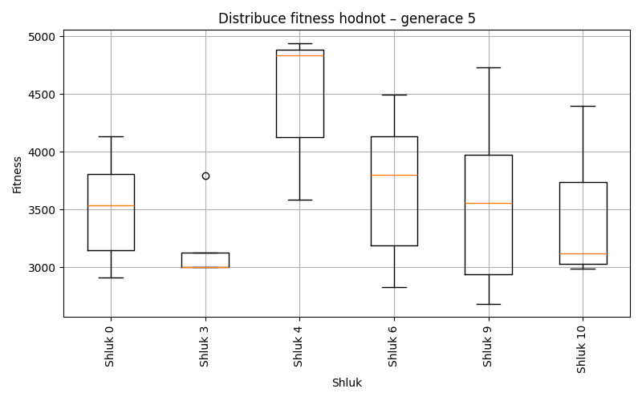
Generace 6


Posun centroidů mezi generací 5 → 6:
- Shluk 0: 107.7107
- Shluk 1: 180.0484
- Shluk 2: 385.8664
- Shluk 3: 676.1612
- Shluk 4: 528.8103
- Shluk 5: 424.6788

Generace 7

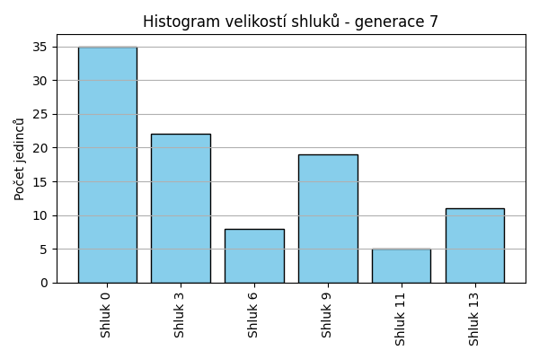
Posun centroidů mezi generací 6 → 7:
- Shluk 0: 81.7815
- Shluk 1: 394.3861
- Shluk 2: 146.7546
- Shluk 3: 112.6789
- Shluk 4: 177.3457
- Shluk 5: 744.4696

Generace 8


Posun centroidů mezi generací 7 → 8:
- Shluk 0: 79.7177
- Shluk 1: 457.2893
- Shluk 2: 630.6409
- Shluk 3: 227.3356
- Shluk 4: 923.3759
- Shluk 5: 616.0301

Generace 9

Posun centroidů mezi generací 8 → 9:
- Shluk 0: 100.3961
- Shluk 1: 531.2419
- Shluk 2: 511.8416
- Shluk 3: 309.1282
- Shluk 4: 414.1720
- Shluk 5: 306.9578

Generace 10


Posun centroidů mezi generací 9 → 10:
- Shluk 0: 127.8513
- Shluk 1: 88.2111
- Shluk 2: 654.2143
- Shluk 3: 394.3418
- Shluk 4: 1135.0465
- Shluk 5: 561.9334
Generace 11


Posun centroidů mezi generací 10 → 11:
- Shluk 0: 69.4310
- Shluk 1: 75.1595
- Shluk 2: 259.8357
- Shluk 3: 534.5388
- Shluk 4: 762.5583
- Shluk 5: 1030.5726

Generace 12

Posun centroidů mezi generací 11 → 12:
- Shluk 0: 178.7172
- Shluk 1: 461.0069
- Shluk 2: 526.5002
- Shluk 3: 311.8096
- Shluk 4: 926.7758
- Shluk 5: 1088.0868

Generace 13


Posun centroidů mezi generací 12 → 13:
- Shluk 0: 74.6468
- Shluk 1: 279.4413
- Shluk 2: 890.5084
- Shluk 3: 548.6618
- Shluk 4: 1017.3838
- Shluk 5: 778.7859
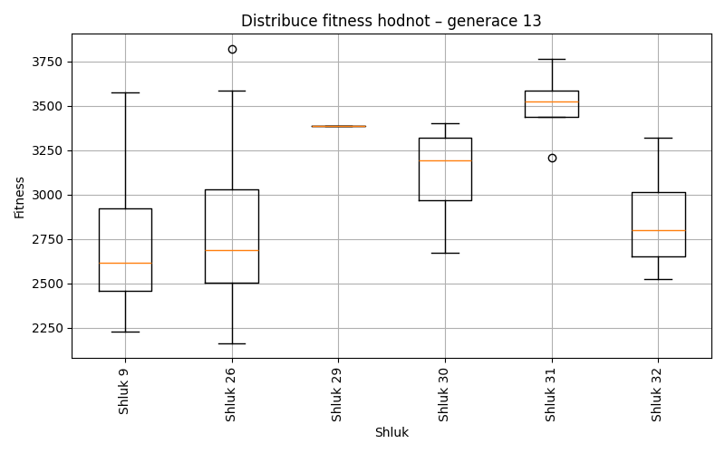
Generace 14

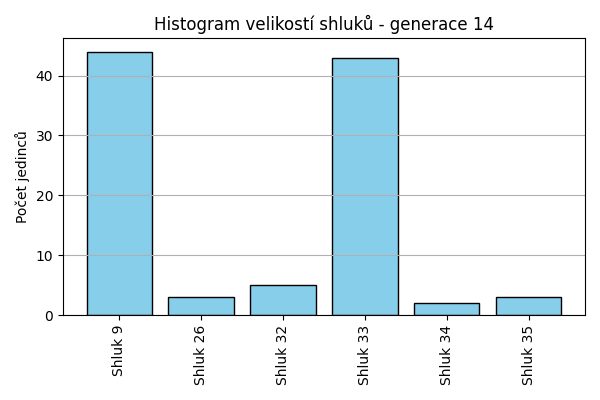
Posun centroidů mezi generací 13 → 14:
- Shluk 0: 29.1941
- Shluk 1: 455.8040
- Shluk 2: 921.4056
- Shluk 3: 555.3678
- Shluk 4: 872.0005
- Shluk 5: 885.4268

Generace 15

Posun centroidů mezi generací 14 → 15:
- Shluk 0: 68.4438
- Shluk 1: 465.2677
- Shluk 2: 193.8139
- Shluk 3: 539.5253
- Shluk 4: 644.2666
- Shluk 5: 1058.1261

Generace 16

Posun centroidů mezi generací 15 → 16:
- Shluk 0: 36.3629
- Shluk 1: 575.9578
- Shluk 2: 582.6364
- Shluk 3: 616.3513
- Shluk 4: 723.5279
- Shluk 5: 264.1683

Generace 17

Posun centroidů mezi generací 16 → 17:
- Shluk 0: 36.6485
- Shluk 1: 148.5234
- Shluk 2: 355.1370
- Shluk 3: 687.7946
- Shluk 4: 805.9651
- Shluk 5: 1160.9144

Generace 18

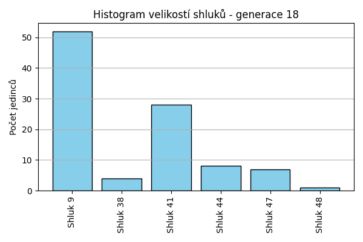
Posun centroidů mezi generací 17 → 18:
- Shluk 0: 43.9168
- Shluk 1: 68.3233
- Shluk 2: 48.2627
- Shluk 3: 269.6739
- Shluk 4: 600.1029
- Shluk 5: 1127.4022
Generace 19


Posun centroidů mezi generací 18 → 19:
- Shluk 0: 40.5752
- Shluk 1: 143.0973
- Shluk 2: 60.7837
- Shluk 3: 130.0790
- Shluk 4: 224.1302
- Shluk 5: 973.8400

Generace 20

Posun centroidů mezi generací 19 → 20:
- Shluk 0: 56.6484
- Shluk 1: 140.9638
- Shluk 2: 57.6349
- Shluk 3: 107.7495
- Shluk 4: 885.4233
- Shluk 5: 150.3638
Generace 21
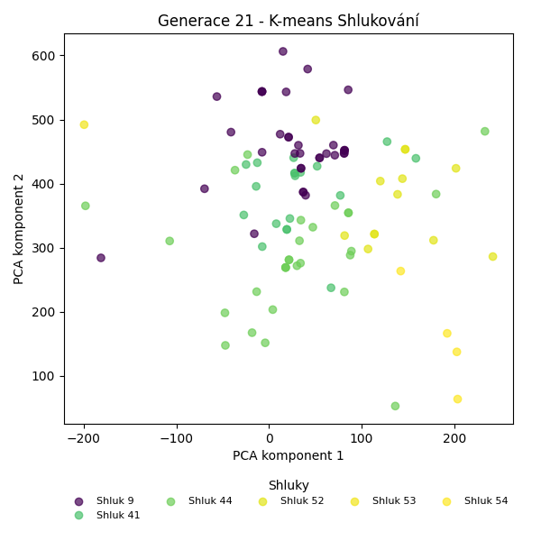
Posun centroidů mezi generací 20 → 21:
- Shluk 0: 80.1680
- Shluk 1: 368.7112
- Shluk 2: 376.0815
- Shluk 3: 418.7954
- Shluk 4: 1124.0829
- Shluk 5: 809.3756
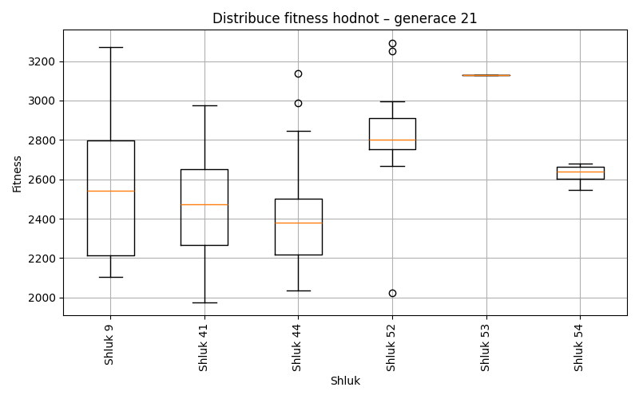
Generace 22

Posun centroidů mezi generací 21 → 22:
- Shluk 0: 108.1055
- Shluk 1: 46.6438
- Shluk 2: 87.3100
- Shluk 3: 970.8006
- Shluk 4: 1012.1169
- Shluk 5: 838.4023
Generace 23


Posun centroidů mezi generací 22 → 23:
- Shluk 0: 112.5351
- Shluk 1: 173.4503
- Shluk 2: 84.7600
- Shluk 3: 1017.1920
- Shluk 4: 1036.5170
- Shluk 5: 1033.5899
Generace 24
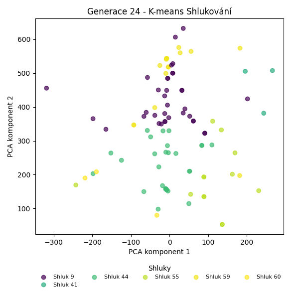
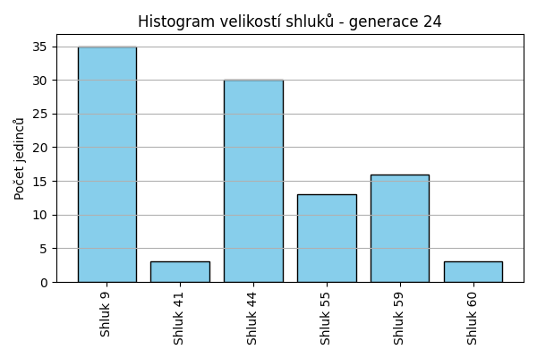
Posun centroidů mezi generací 23 → 24:
- Shluk 0: 137.1002
- Shluk 1: 579.2967
- Shluk 2: 67.4432
- Shluk 3: 69.8762
- Shluk 4: 739.2170
- Shluk 5: 1041.0178

Generace 25

Posun centroidů mezi generací 24 → 25:
- Shluk 0: 79.6935
- Shluk 1: 696.5731
- Shluk 2: 557.6905
- Shluk 3: 686.8029
- Shluk 4: 684.7738
- Shluk 5: 1034.2312

Generace 26
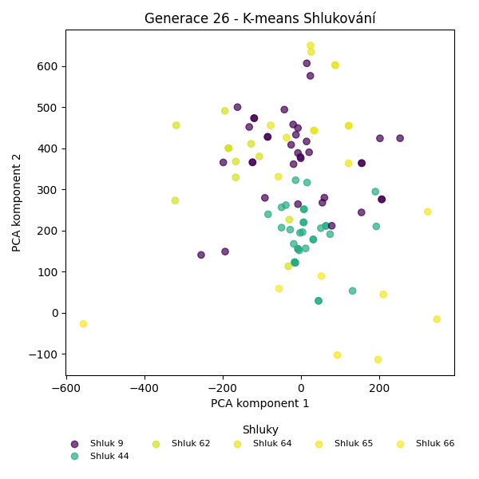
Posun centroidů mezi generací 25 → 26:
- Shluk 0: 85.7822
- Shluk 1: 121.4809
- Shluk 2: 657.7268
- Shluk 3: 283.4678
- Shluk 4: 941.6867
- Shluk 5: 998.4547

Generace 27


Posun centroidů mezi generací 26 → 27:
- Shluk 0: 240.4225
- Shluk 1: 77.4433
- Shluk 2: 786.7808
- Shluk 3: 283.7142
- Shluk 4: 636.7644
- Shluk 5: 763.5630

Generace 28
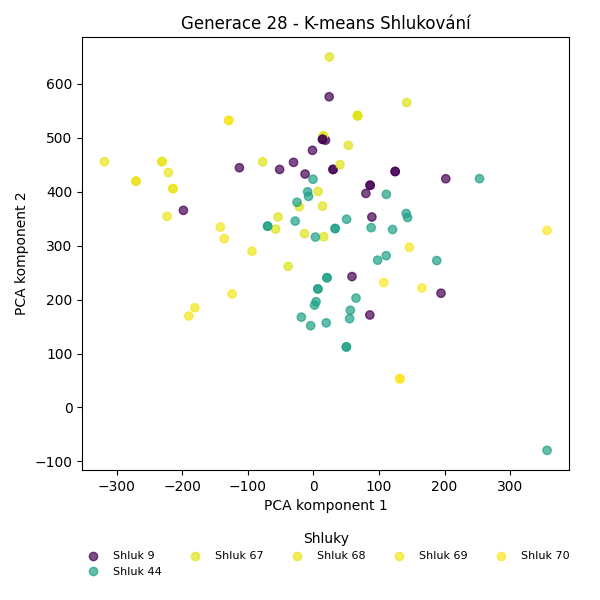

Posun centroidů mezi generací 27 → 28:
- Shluk 0: 185.5095
- Shluk 1: 135.4655
- Shluk 2: 806.8695
- Shluk 3: 731.0048
- Shluk 4: 415.9647
- Shluk 5: 704.9695
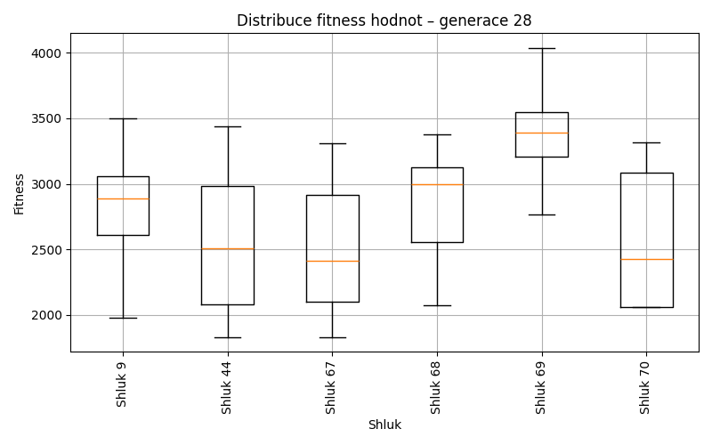
Generace 29
Posun centroidů mezi generací 28 → 29:
- Shluk 0: 255.7145
- Shluk 1: 49.7038
- Shluk 2: 270.7386
- Shluk 3: 216.5915
- Shluk 4: 716.5558
- Shluk 5: 1127.9113
Generace 30


Posun centroidů mezi generací 29 → 30:
- Shluk 0: 191.1733
- Shluk 1: 157.5265
- Shluk 2: 137.2045
- Shluk 3: 911.1764
- Shluk 4: 809.4921
- Shluk 5: 574.1349
Generace 31
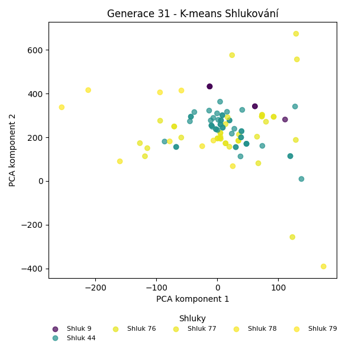
Posun centroidů mezi generací 30 → 31:
- Shluk 0: 365.8190
- Shluk 1: 153.7873
- Shluk 2: 434.1172
- Shluk 3: 1000.4657
- Shluk 4: 808.4696
- Shluk 5: 876.1544

Generace 32


Posun centroidů mezi generací 31 → 32:
- Shluk 0: 102.4351
- Shluk 1: 68.5864
- Shluk 2: 80.1981
- Shluk 3: 318.5362
- Shluk 4: 688.6229
- Shluk 5: 209.7468

Generace 33


Posun centroidů mezi generací 32 → 33:
- Shluk 0: 274.5802
- Shluk 1: 108.9647
- Shluk 2: 481.2079
- Shluk 3: 239.9548
- Shluk 4: 352.8737
- Shluk 5: 305.7057
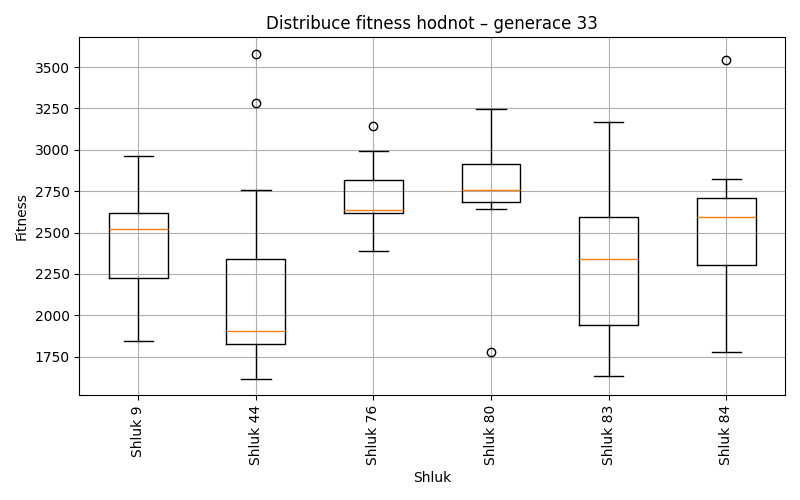
Generace 34


Posun centroidů mezi generací 33 → 34:
- Shluk 0: 354.2234
- Shluk 1: 614.1734
- Shluk 2: 765.7962
- Shluk 3: 847.0107
- Shluk 4: 157.6504
- Shluk 5: 992.3416
Generace 35

Posun centroidů mezi generací 34 → 35:
- Shluk 0: 121.3443
- Shluk 1: 944.4179
- Shluk 2: 636.2403
- Shluk 3: 881.2846
- Shluk 4: 681.8940
- Shluk 5: 381.0796
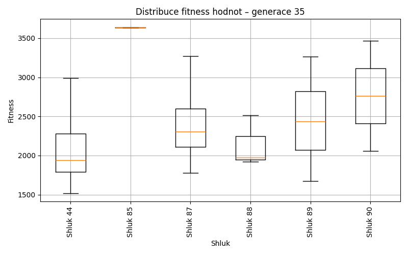
Generace 36
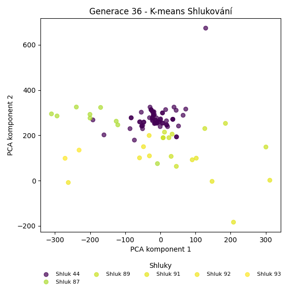

Posun centroidů mezi generací 35 → 36:
- Shluk 0: 32.0357
- Shluk 1: 1225.8423
- Shluk 2: 576.3747
- Shluk 3: 859.7275
- Shluk 4: 917.7695
- Shluk 5: 1137.6269
Generace 37
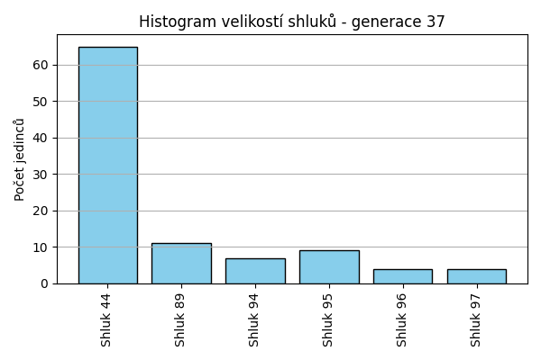
Posun centroidů mezi generací 36 → 37:
- Shluk 0: 59.6380
- Shluk 1: 534.2012
- Shluk 2: 600.2473
- Shluk 3: 736.9404
- Shluk 4: 907.0659
- Shluk 5: 780.2980

Generace 38
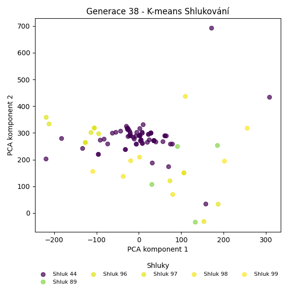

Posun centroidů mezi generací 37 → 38:
- Shluk 0: 33.5053
- Shluk 1: 196.0646
- Shluk 2: 514.0118
- Shluk 3: 647.1368
- Shluk 4: 743.8317
- Shluk 5: 718.1749
Generace 39

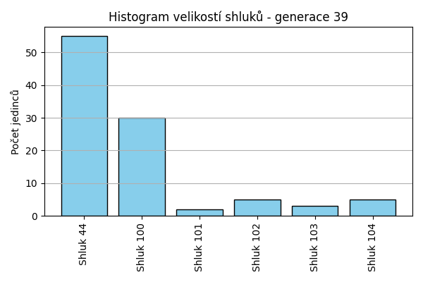
Posun centroidů mezi generací 38 → 39:
- Shluk 0: 109.3039
- Shluk 1: 427.8483
- Shluk 2: 891.4097
- Shluk 3: 790.3893
- Shluk 4: 773.3634
- Shluk 5: 754.1568
Generace 40

Posun centroidů mezi generací 39 → 40:
- Shluk 0: 56.1492
- Shluk 1: 742.1316
- Shluk 2: 1007.4411
- Shluk 3: 737.3601
- Shluk 4: 719.8755
- Shluk 5: 1028.7528
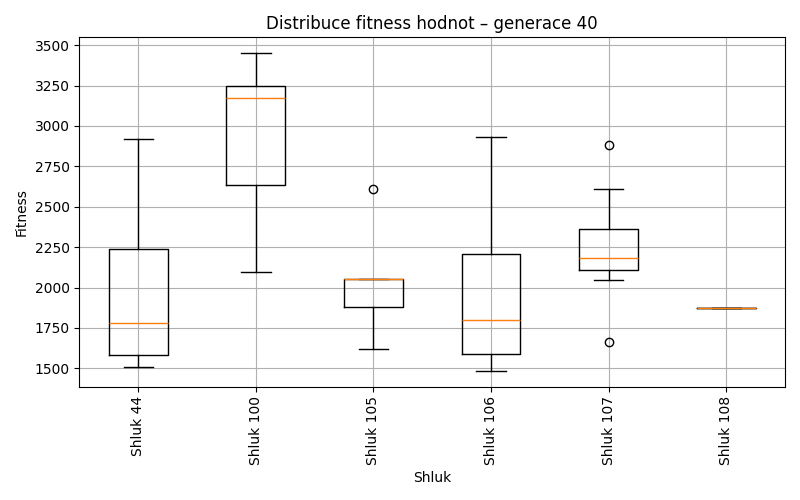
Generace 41
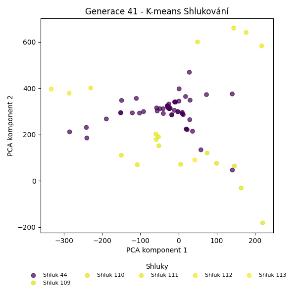

Posun centroidů mezi generací 40 → 41:
- Shluk 0: 50.2897
- Shluk 1: 919.0602
- Shluk 2: 782.8860
- Shluk 3: 778.9202
- Shluk 4: 757.5273
- Shluk 5: 1107.3966
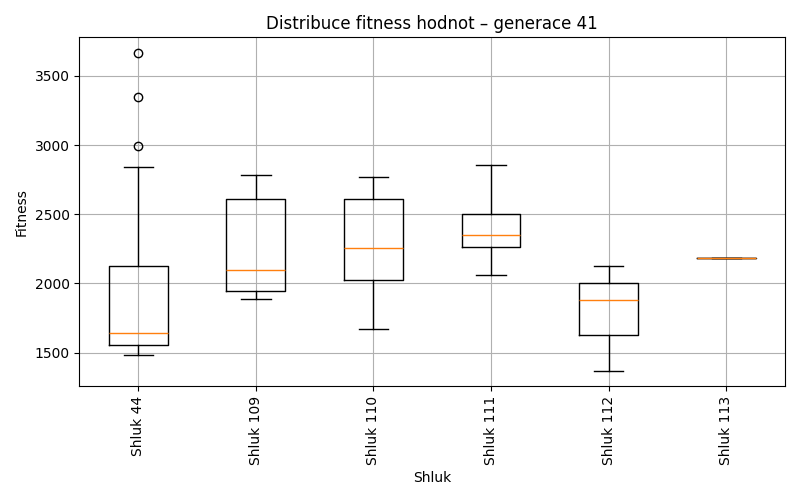
Generace 42

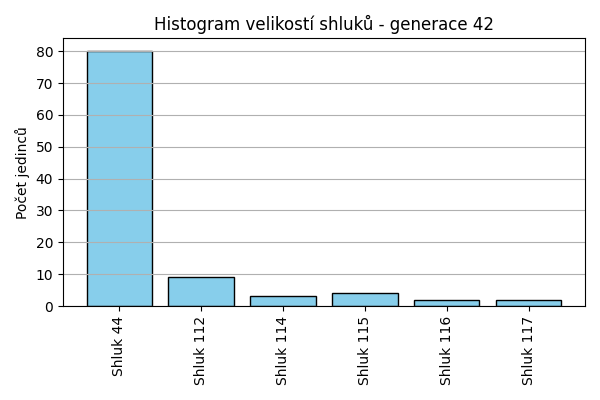
Posun centroidů mezi generací 41 → 42:
- Shluk 0: 35.0215
- Shluk 1: 743.1754
- Shluk 2: 926.1280
- Shluk 3: 842.8799
- Shluk 4: 717.0204
- Shluk 5: 995.5650

Generace 43
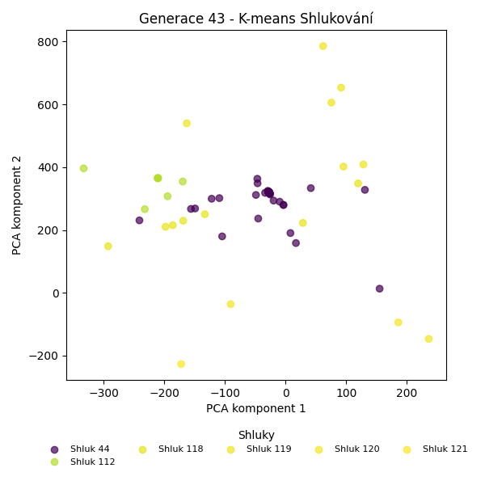

Posun centroidů mezi generací 42 → 43:
- Shluk 0: 27.7769
- Shluk 1: 109.5282
- Shluk 2: 833.6287
- Shluk 3: 851.5585
- Shluk 4: 820.9784
- Shluk 5: 1207.3671

Generace 44
Posun centroidů mezi generací 43 → 44:
- Shluk 0: 22.0993
- Shluk 1: 856.8936
- Shluk 2: 172.6361
- Shluk 3: 750.4942
- Shluk 4: 1030.0585
- Shluk 5: 1528.4024

Generace 45

Posun centroidů mezi generací 44 → 45:
- Shluk 0: 28.1813
- Shluk 1: 881.9426
- Shluk 2: 780.9141
- Shluk 3: 1341.4943
- Shluk 4: 984.5541
- Shluk 5: 1145.0225

Generace 46

Posun centroidů mezi generací 45 → 46:
- Shluk 0: 56.7648
- Shluk 1: 591.4489
- Shluk 2: 207.2528
- Shluk 3: 992.9781
- Shluk 4: 1005.8888
- Shluk 5: 947.4870
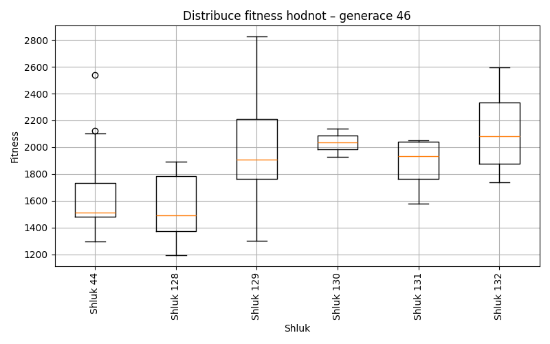
Generace 47


Posun centroidů mezi generací 46 → 47:
- Shluk 0: 24.6632
- Shluk 1: 70.3993
- Shluk 2: 79.5218
- Shluk 3: 1101.9505
- Shluk 4: 1075.5897
- Shluk 5: 683.1512

Generace 48
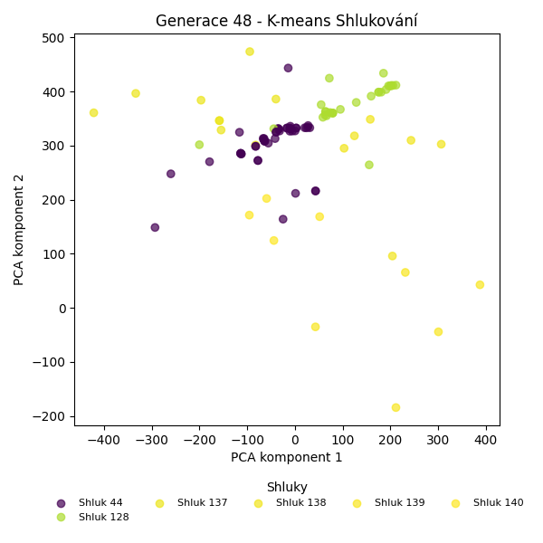

Posun centroidů mezi generací 47 → 48:
- Shluk 0: 43.3572
- Shluk 1: 68.2160
- Shluk 2: 84.7401
- Shluk 3: 896.8285
- Shluk 4: 1012.2294
- Shluk 5: 134.0823

Generace 49

Posun centroidů mezi generací 48 → 49:
- Shluk 0: 87.7523
- Shluk 1: 55.1805
- Shluk 2: 976.6227
- Shluk 3: 898.5672
- Shluk 4: 860.5038
- Shluk 5: 199.7489

Generace 50
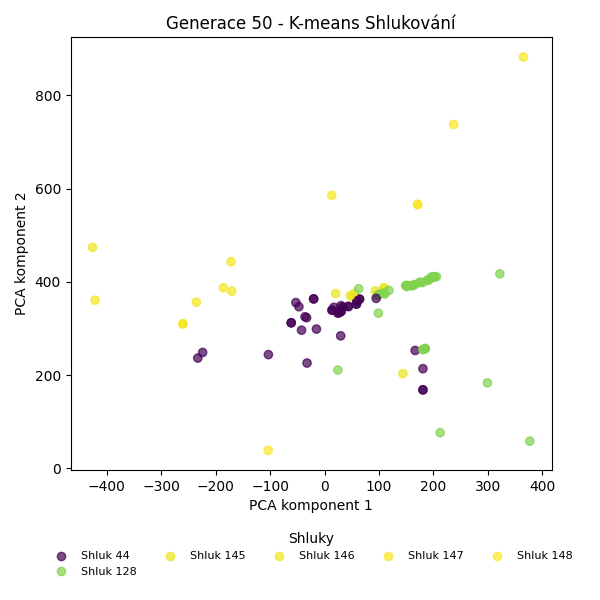

Posun centroidů mezi generací 49 → 50:
- Shluk 0: 123.2711
- Shluk 1: 96.5193
- Shluk 2: 936.0966
- Shluk 3: 788.5560
- Shluk 4: 777.7795
- Shluk 5: 1106.0953
Generace 51

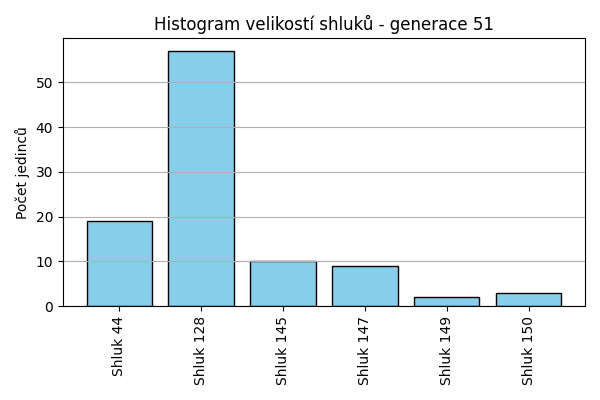
Posun centroidů mezi generací 50 → 51:
- Shluk 0: 57.4442
- Shluk 1: 64.5335
- Shluk 2: 107.5107
- Shluk 3: 683.9032
- Shluk 4: 1063.4753
- Shluk 5: 561.4821

Generace 52

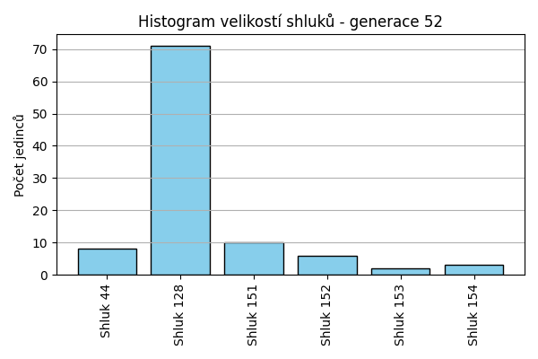
Posun centroidů mezi generací 51 → 52:
- Shluk 0: 216.8653
- Shluk 1: 27.7168
- Shluk 2: 177.3987
- Shluk 3: 653.5471
- Shluk 4: 1189.7792
- Shluk 5: 1059.5331
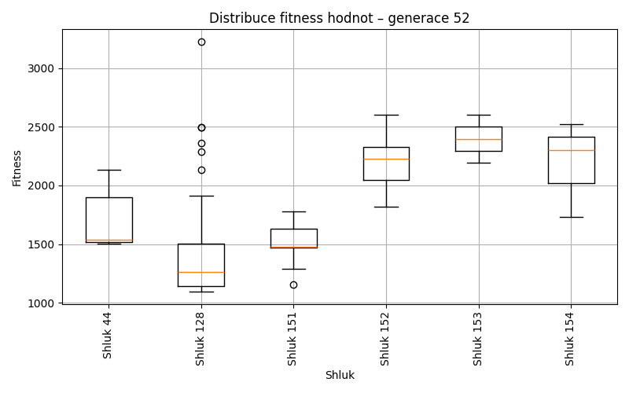
Generace 53
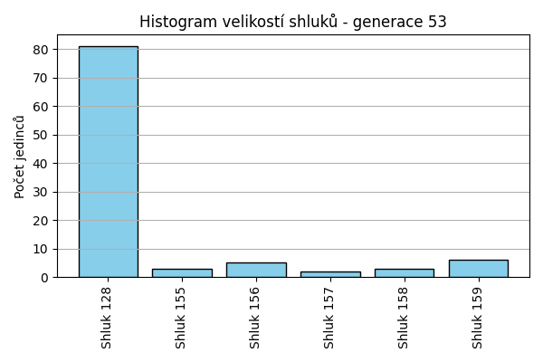
Posun centroidů mezi generací 52 → 53:
- Shluk 0: 533.4791
- Shluk 1: 592.1713
- Shluk 2: 627.8639
- Shluk 3: 783.2706
- Shluk 4: 1074.5779
- Shluk 5: 1039.5599
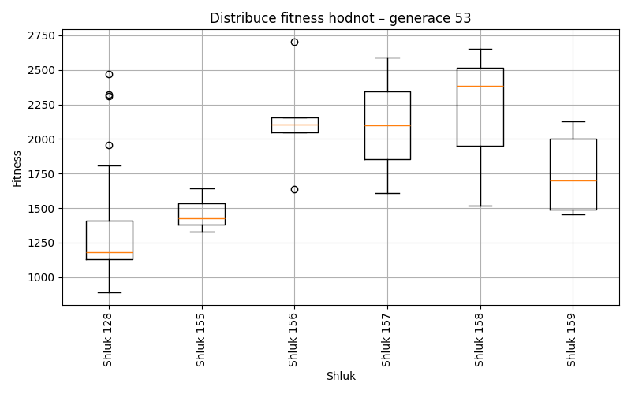
Generace 54


Posun centroidů mezi generací 53 → 54:
- Shluk 0: 25.8830
- Shluk 1: 672.8018
- Shluk 2: 703.9353
- Shluk 3: 971.2864
- Shluk 4: 824.3895
- Shluk 5: 237.3784
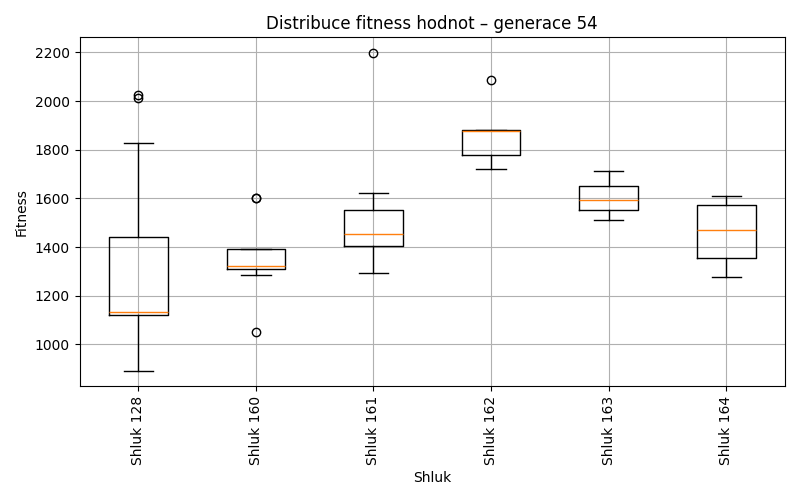
Generace 55


Posun centroidů mezi generací 54 → 55:
- Shluk 0: 23.6836
- Shluk 1: 723.9880
- Shluk 2: 706.3813
- Shluk 3: 176.5935
- Shluk 4: 1127.9038
- Shluk 5: 603.4827
Generace 56

Posun centroidů mezi generací 55 → 56:
- Shluk 0: 33.9767
- Shluk 1: 744.0555
- Shluk 2: 719.5559
- Shluk 3: 1067.8573
- Shluk 4: 1105.7021
- Shluk 5: 857.0154
Generace 57


Posun centroidů mezi generací 56 → 57:
- Shluk 0: 36.4070
- Shluk 1: 77.9760
- Shluk 2: 736.9317
- Shluk 3: 1044.2645
- Shluk 4: 222.6124
- Shluk 5: 907.4892
Generace 58
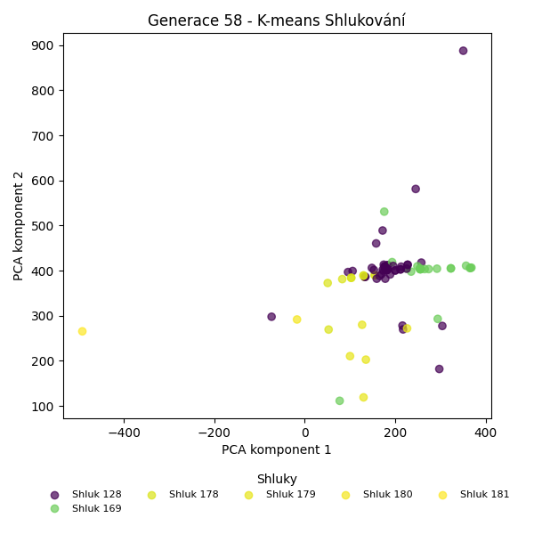

Posun centroidů mezi generací 57 → 58:
- Shluk 0: 47.6572
- Shluk 1: 65.9340
- Shluk 2: 690.9002
- Shluk 3: 963.4829
- Shluk 4: 1317.8871
- Shluk 5: 1141.9758

Generace 59

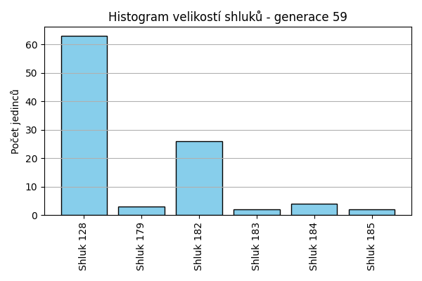
Posun centroidů mezi generací 58 → 59:
- Shluk 0: 44.5954
- Shluk 1: 681.5390
- Shluk 2: 345.7613
- Shluk 3: 1006.0519
- Shluk 4: 1289.3370
- Shluk 5: 1121.2225

Generace 60
Posun centroidů mezi generací 59 → 60:
- Shluk 0: 48.6016
- Shluk 1: 693.5984
- Shluk 2: 578.6845
- Shluk 3: 936.9867
- Shluk 4: 801.3300
- Shluk 5: 1023.0471
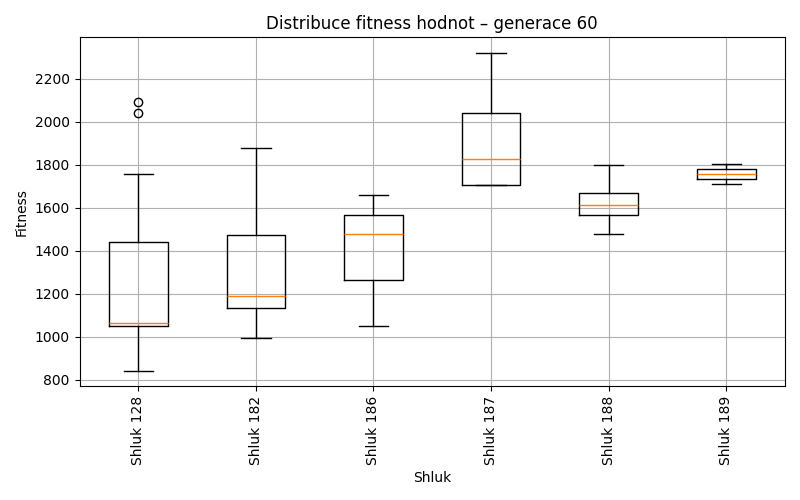
Generace 61

Posun centroidů mezi generací 60 → 61:
- Shluk 0: 44.8443
- Shluk 1: 481.0017
- Shluk 2: 673.1373
- Shluk 3: 903.5623
- Shluk 4: 795.5224
- Shluk 5: 269.8659

Generace 62


Posun centroidů mezi generací 61 → 62:
- Shluk 0: 29.0487
- Shluk 1: 257.3429
- Shluk 2: 201.3435
- Shluk 3: 969.6956
- Shluk 4: 1052.6392
- Shluk 5: 998.6179

Generace 63
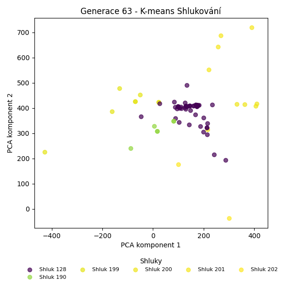
Posun centroidů mezi generací 62 → 63:
- Shluk 0: 43.2296
- Shluk 1: 199.2204
- Shluk 2: 224.9670
- Shluk 3: 884.8430
- Shluk 4: 866.4271
- Shluk 5: 1020.9433
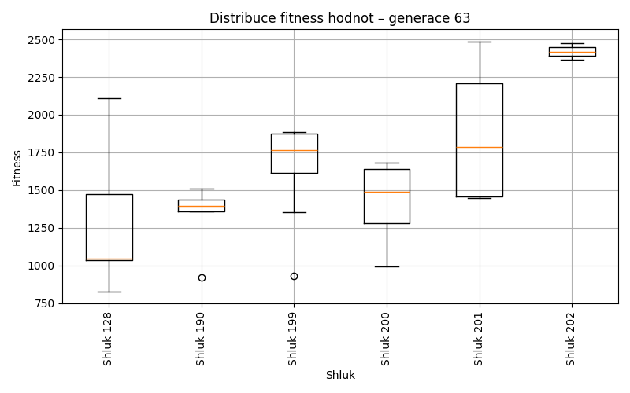
Generace 64


Posun centroidů mezi generací 63 → 64:
- Shluk 0: 22.7058
- Shluk 1: 150.8370
- Shluk 2: 789.9802
- Shluk 3: 934.7428
- Shluk 4: 826.6566
- Shluk 5: 1119.4469
Generace 65


Posun centroidů mezi generací 64 → 65:
- Shluk 0: 23.9827
- Shluk 1: 122.8749
- Shluk 2: 921.7812
- Shluk 3: 233.2052
- Shluk 4: 908.3261
- Shluk 5: 974.7943
Generace 66
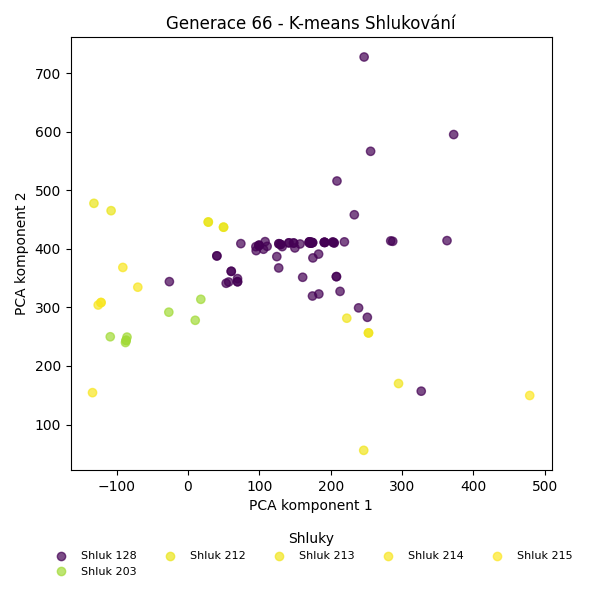

Posun centroidů mezi generací 65 → 66:
- Shluk 0: 42.5750
- Shluk 1: 136.7550
- Shluk 2: 297.7867
- Shluk 3: 745.8091
- Shluk 4: 262.1249
- Shluk 5: 1197.5860

Generace 67


Posun centroidů mezi generací 66 → 67:
- Shluk 0: 81.2762
- Shluk 1: 114.4295
- Shluk 2: 103.3508
- Shluk 3: 529.7389
- Shluk 4: 967.9297
- Shluk 5: 1504.6676

Generace 68
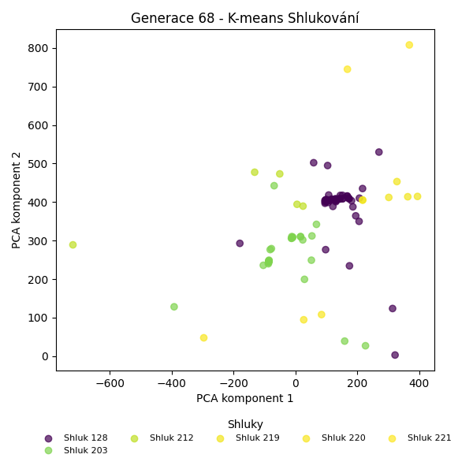
Posun centroidů mezi generací 67 → 68:
- Shluk 0: 60.2937
- Shluk 1: 86.4941
- Shluk 2: 273.5698
- Shluk 3: 161.1477
- Shluk 4: 633.8568
- Shluk 5: 1073.3926

Generace 69
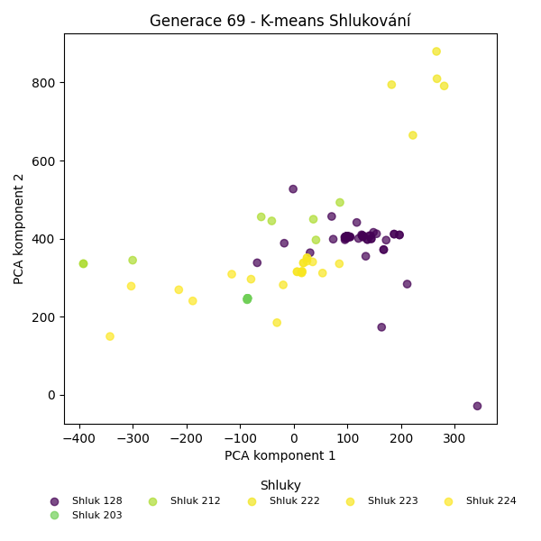

Posun centroidů mezi generací 68 → 69:
- Shluk 0: 39.5926
- Shluk 1: 184.9615
- Shluk 2: 211.1759
- Shluk 3: 871.8009
- Shluk 4: 833.8833
- Shluk 5: 1058.2352

Generace 70
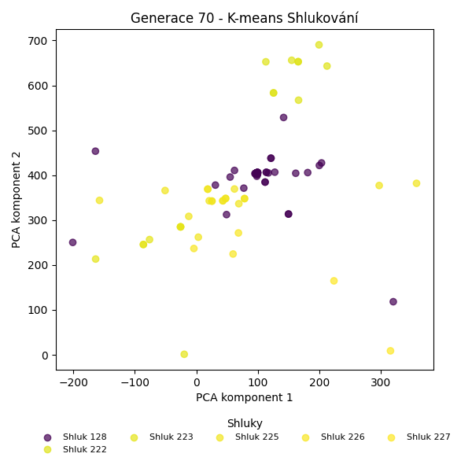

Posun centroidů mezi generací 69 → 70:
- Shluk 0: 45.9192
- Shluk 1: 784.6489
- Shluk 2: 831.9419
- Shluk 3: 772.7543
- Shluk 4: 730.9772
- Shluk 5: 938.3129

Generace 71

Posun centroidů mezi generací 70 → 71:
- Shluk 0: 32.4531
- Shluk 1: 620.5263
- Shluk 2: 1057.6584
- Shluk 3: 605.3204
- Shluk 4: 122.3566
- Shluk 5: 963.9910

Generace 72

Posun centroidů mezi generací 71 → 72:
- Shluk 0: 36.7514
- Shluk 1: 691.0108
- Shluk 2: 1073.7443
- Shluk 3: 1228.0691
- Shluk 4: 784.3728
- Shluk 5: 1011.7933

Generace 73

Posun centroidů mezi generací 72 → 73:
- Shluk 0: 23.7688
- Shluk 1: 420.5981
- Shluk 2: 856.6595
- Shluk 3: 1237.7064
- Shluk 4: 270.7903
- Shluk 5: 1437.0396
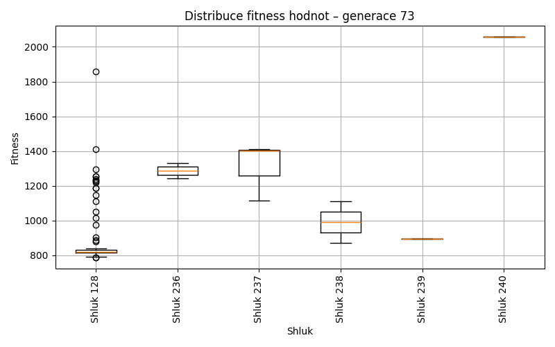
Generace 74


Posun centroidů mezi generací 73 → 74:
- Shluk 0: 31.5701
- Shluk 1: 1117.0210
- Shluk 2: 914.6270
- Shluk 3: 783.8732
- Shluk 4: 1188.8036
- Shluk 5: 1447.3073
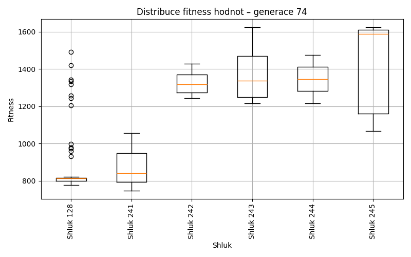
Generace 75
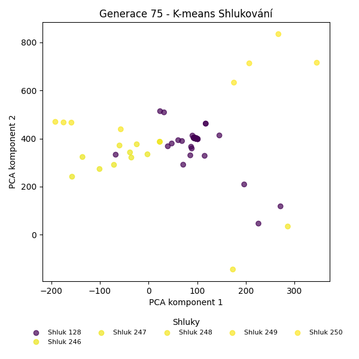

Posun centroidů mezi generací 74 → 75:
- Shluk 0: 24.0256
- Shluk 1: 287.1316
- Shluk 2: 695.6510
- Shluk 3: 964.3448
- Shluk 4: 1020.6278
- Shluk 5: 966.3384

Generace 76


Posun centroidů mezi generací 75 → 76:
- Shluk 0: 38.0786
- Shluk 1: 670.1034
- Shluk 2: 15.2374
- Shluk 3: 179.2011
- Shluk 4: 838.9930
- Shluk 5: 915.9536
Generace 77

Posun centroidů mezi generací 76 → 77:
- Shluk 0: 41.6713
- Shluk 1: 715.7732
- Shluk 2: 847.8683
- Shluk 3: 925.1867
- Shluk 4: 534.9273
- Shluk 5: 1093.9311

Generace 78


Posun centroidů mezi generací 77 → 78:
- Shluk 0: 40.4914
- Shluk 1: 665.5701
- Shluk 2: 866.0479
- Shluk 3: 775.0490
- Shluk 4: 909.2251
- Shluk 5: 1163.6477

Generace 79
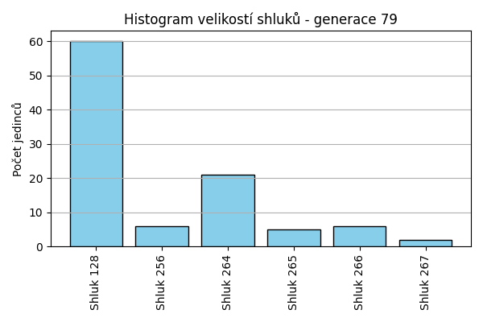
Posun centroidů mezi generací 78 → 79:
- Shluk 0: 46.2461
- Shluk 1: 229.8939
- Shluk 2: 120.2079
- Shluk 3: 815.2353
- Shluk 4: 734.6642
- Shluk 5: 1000.5580

Generace 80

Posun centroidů mezi generací 79 → 80:
- Shluk 0: 17.4608
- Shluk 1: 619.4767
- Shluk 2: 277.0093
- Shluk 3: 914.0098
- Shluk 4: 154.4547
- Shluk 5: 1075.6461
Generace 81
Posun centroidů mezi generací 80 → 81:
- Shluk 0: 36.0088
- Shluk 1: 342.8833
- Shluk 2: 588.6258
- Shluk 3: 705.7774
- Shluk 4: 868.3300
- Shluk 5: 168.1849
Generace 82

Posun centroidů mezi generací 81 → 82:
- Shluk 0: 148.4646
- Shluk 1: 137.4813
- Shluk 2: 496.9441
- Shluk 3: 742.2712
- Shluk 4: 342.5593
- Shluk 5: 1208.8520

Generace 83


Posun centroidů mezi generací 82 → 83:
- Shluk 0: 218.4257
- Shluk 1: 137.0180
- Shluk 2: 72.5632
- Shluk 3: 957.3532
- Shluk 4: 1095.4398
- Shluk 5: 272.7995
Generace 84

Posun centroidů mezi generací 83 → 84:
- Shluk 0: 307.6950
- Shluk 1: 71.7106
- Shluk 2: 703.3366
- Shluk 3: 811.6681
- Shluk 4: 1088.5751
- Shluk 5: 280.8490
Generace 85


Posun centroidů mezi generací 84 → 85:
- Shluk 0: 96.2008
- Shluk 1: 213.7653
- Shluk 2: 649.6129
- Shluk 3: 798.6618
- Shluk 4: 966.4000
- Shluk 5: 1112.9153
Generace 86

Posun centroidů mezi generací 85 → 86:
- Shluk 0: 72.2770
- Shluk 1: 200.9863
- Shluk 2: 147.7983
- Shluk 3: 845.4399
- Shluk 4: 923.2717
- Shluk 5: 1016.5880

Generace 87

Posun centroidů mezi generací 86 → 87:
- Shluk 0: 30.2698
- Shluk 1: 114.9672
- Shluk 2: 705.8100
- Shluk 3: 899.7218
- Shluk 4: 176.1778
- Shluk 5: 908.4874
Generace 88


Posun centroidů mezi generací 87 → 88:
- Shluk 0: 42.6839
- Shluk 1: 561.8602
- Shluk 2: 830.7255
- Shluk 3: 732.9913
- Shluk 4: 1262.3508
- Shluk 5: 817.9604

Generace 89


Posun centroidů mezi generací 88 → 89:
- Shluk 0: 41.8077
- Shluk 1: 265.8662
- Shluk 2: 778.9683
- Shluk 3: 1050.7657
- Shluk 4: 1317.3437
- Shluk 5: 1008.1615

Generace 90

Posun centroidů mezi generací 89 → 90:
- Shluk 0: 32.1858
- Shluk 1: 881.3336
- Shluk 2: 860.0893
- Shluk 3: 207.4693
- Shluk 4: 906.4939
- Shluk 5: 1040.2855
Generace 91


Posun centroidů mezi generací 90 → 91:
- Shluk 0: 28.3833
- Shluk 1: 127.9765
- Shluk 2: 161.4436
- Shluk 3: 610.7365
- Shluk 4: 713.1022
- Shluk 5: 1202.4013

Generace 92


Posun centroidů mezi generací 91 → 92:
- Shluk 0: 27.2472
- Shluk 1: 989.5748
- Shluk 2: 857.4710
- Shluk 3: 862.4336
- Shluk 4: 739.6801
- Shluk 5: 929.2073

Generace 93

Posun centroidů mezi generací 92 → 93:
- Shluk 0: 30.3154
- Shluk 1: 785.4929
- Shluk 2: 801.3811
- Shluk 3: 958.4891
- Shluk 4: 168.8830
- Shluk 5: 751.6285
Generace 94


Posun centroidů mezi generací 93 → 94:
- Shluk 0: 24.5516
- Shluk 1: 124.1088
- Shluk 2: 1006.9682
- Shluk 3: 96.2642
- Shluk 4: 1115.3353
- Shluk 5: 221.0340

Generace 95
Posun centroidů mezi generací 94 → 95:
- Shluk 0: 23.5291
- Shluk 1: 170.5615
- Shluk 2: 995.7110
- Shluk 3: 764.9870
- Shluk 4: 1103.0509
- Shluk 5: 142.5995

Generace 96

Posun centroidů mezi generací 95 → 96:
- Shluk 0: 27.5712
- Shluk 1: 123.4754
- Shluk 2: 826.4935
- Shluk 3: 963.7154
- Shluk 4: 925.7051
- Shluk 5: 968.5787

Generace 97

Posun centroidů mezi generací 96 → 97:
- Shluk 0: 36.7887
- Shluk 1: 1444.4807
- Shluk 2: 158.2522
- Shluk 3: 883.9060
- Shluk 4: 590.2280
- Shluk 5: 779.6038

Generace 98

Posun centroidů mezi generací 97 → 98:
- Shluk 0: 47.8707
- Shluk 1: 1481.3594
- Shluk 2: 885.1781
- Shluk 3: 716.3874
- Shluk 4: 562.7162
- Shluk 5: 731.4908

Generace 99

Posun centroidů mezi generací 98 → 99:
- Shluk 0: 59.4531
- Shluk 1: 683.2105
- Shluk 2: 914.4146
- Shluk 3: 296.6805
- Shluk 4: 717.6732
- Shluk 5: 819.7111

Generace 100

Posun centroidů mezi generací 99 → 100:
- Shluk 0: 50.2793
- Shluk 1: 666.7250
- Shluk 2: 700.6228
- Shluk 3: 1122.0590
- Shluk 4: 870.7736
- Shluk 5: 868.1204
Generace 101

Posun centroidů mezi generací 100 → 101:
- Shluk 0: 55.9548
- Shluk 1: 621.2459
- Shluk 2: 849.4569
- Shluk 3: 1037.4914
- Shluk 4: 954.9643
- Shluk 5: 966.7160

Generace 102

Posun centroidů mezi generací 101 → 102:
- Shluk 0: 24.6118
- Shluk 1: 741.8275
- Shluk 2: 929.0247
- Shluk 3: 1044.0879
- Shluk 4: 913.5077
- Shluk 5: 839.7298
Generace 103

Posun centroidů mezi generací 102 → 103:
- Shluk 0: 33.4790
- Shluk 1: 890.5302
- Shluk 2: 935.8960
- Shluk 3: 877.5263
- Shluk 4: 1147.5819
- Shluk 5: 969.2956
Generace 104

Posun centroidů mezi generací 103 → 104:
- Shluk 0: 34.5499
- Shluk 1: 779.6804
- Shluk 2: 1029.0707
- Shluk 3: 976.6526
- Shluk 4: 1236.4603
- Shluk 5: 1169.1465

Generace 105


Posun centroidů mezi generací 104 → 105:
- Shluk 0: 27.5918
- Shluk 1: 76.3854
- Shluk 2: 989.3761
- Shluk 3: 1062.7876
- Shluk 4: 905.3857
- Shluk 5: 1215.6170
Generace 106


Posun centroidů mezi generací 105 → 106:
- Shluk 0: 28.6531
- Shluk 1: 84.5118
- Shluk 2: 960.7279
- Shluk 3: 790.3587
- Shluk 4: 385.4813
- Shluk 5: 1297.5701

Generace 107

Posun centroidů mezi generací 106 → 107:
- Shluk 0: 32.6058
- Shluk 1: 709.9175
- Shluk 2: 992.5042
- Shluk 3: 847.2296
- Shluk 4: 649.6526
- Shluk 5: 1150.1296
Generace 108


Posun centroidů mezi generací 107 → 108:
- Shluk 0: 39.8484
- Shluk 1: 838.1831
- Shluk 2: 822.4773
- Shluk 3: 820.2637
- Shluk 4: 587.5247
- Shluk 5: 955.8048
Generace 109

Posun centroidů mezi generací 108 → 109:
- Shluk 0: 50.8442
- Shluk 1: 805.4790
- Shluk 2: 260.5277
- Shluk 3: 806.1338
- Shluk 4: 860.1310
- Shluk 5: 1136.9145
Generace 110
Posun centroidů mezi generací 109 → 110:
- Shluk 0: 46.3117
- Shluk 1: 65.1082
- Shluk 2: 636.3086
- Shluk 3: 158.9271
- Shluk 4: 1077.9359
- Shluk 5: 1074.7678

Generace 111


Posun centroidů mezi generací 110 → 111:
- Shluk 0: 37.0733
- Shluk 1: 74.7899
- Shluk 2: 298.6192
- Shluk 3: 960.3327
- Shluk 4: 1021.3306
- Shluk 5: 967.8895
Generace 112

Posun centroidů mezi generací 111 → 112:
- Shluk 0: 31.4115
- Shluk 1: 708.7340
- Shluk 2: 741.7102
- Shluk 3: 789.1839
- Shluk 4: 569.1885
- Shluk 5: 1266.2796
Generace 113

Posun centroidů mezi generací 112 → 113:
- Shluk 0: 36.8875
- Shluk 1: 122.0217
- Shluk 2: 112.7397
- Shluk 3: 974.3427
- Shluk 4: 795.9387
- Shluk 5: 1179.6378
Generace 114

Posun centroidů mezi generací 113 → 114:
- Shluk 0: 36.6690
- Shluk 1: 92.9259
- Shluk 2: 138.3547
- Shluk 3: 278.5445
- Shluk 4: 849.1448
- Shluk 5: 1073.4779

Generace 115


Posun centroidů mezi generací 114 → 115:
- Shluk 0: 50.5219
- Shluk 1: 869.5363
- Shluk 2: 597.4264
- Shluk 3: 974.6101
- Shluk 4: 1079.5945
- Shluk 5: 965.0485
Generace 116
Posun centroidů mezi generací 115 → 116:
- Shluk 0: 37.6212
- Shluk 1: 285.5687
- Shluk 2: 210.5073
- Shluk 3: 787.6257
- Shluk 4: 1067.1563
- Shluk 5: 1124.7055

Generace 117


Posun centroidů mezi generací 116 → 117:
- Shluk 0: 38.7755
- Shluk 1: 288.7643
- Shluk 2: 80.4855
- Shluk 3: 695.1511
- Shluk 4: 604.7383
- Shluk 5: 1113.8349

Generace 118


Posun centroidů mezi generací 117 → 118:
- Shluk 0: 46.2530
- Shluk 1: 827.1287
- Shluk 2: 722.4771
- Shluk 3: 697.2927
- Shluk 4: 556.9590
- Shluk 5: 1172.3725

Generace 119
Posun centroidů mezi generací 118 → 119:
- Shluk 0: 79.0706
- Shluk 1: 23.7848
- Shluk 2: 344.8272
- Shluk 3: 96.5728
- Shluk 4: 1101.0784
- Shluk 5: 301.2952

Generace 120


Posun centroidů mezi generací 119 → 120:
- Shluk 0: 684.1840
- Shluk 1: 375.6770
- Shluk 2: 1376.2445
- Shluk 3: 762.2720
- Shluk 4: 1203.4749
- Shluk 5: 1029.4142

Generace 121
Posun centroidů mezi generací 120 → 121:
- Shluk 0: 22.2864
- Shluk 1: 806.4698
- Shluk 2: 315.3170
- Shluk 3: 975.0066
- Shluk 4: 913.6470
- Shluk 5: 996.9900
Generace 122

Posun centroidů mezi generací 121 → 122:
- Shluk 0: 41.0695
- Shluk 1: 1093.6753
- Shluk 2: 920.8617
- Shluk 3: 718.3167
- Shluk 4: 1063.6768
- Shluk 5: 968.7796
Generace 123


Posun centroidů mezi generací 122 → 123:
- Shluk 0: 29.0741
- Shluk 1: 233.2373
- Shluk 2: 985.4847
- Shluk 3: 809.3254
- Shluk 4: 1137.8206
- Shluk 5: 215.3360
Generace 124

Posun centroidů mezi generací 123 → 124:
- Shluk 0: 28.7866
- Shluk 1: 834.9225
- Shluk 2: 640.2261
- Shluk 3: 996.6697
- Shluk 4: 969.8690
- Shluk 5: 993.1114

Generace 125

Posun centroidů mezi generací 124 → 125:
- Shluk 0: 31.6002
- Shluk 1: 835.2380
- Shluk 2: 874.6871
- Shluk 3: 963.6863
- Shluk 4: 857.1145
- Shluk 5: 1098.2301
Generace 126

Posun centroidů mezi generací 125 → 126:
- Shluk 0: 22.3515
- Shluk 1: 808.2759
- Shluk 2: 842.2351
- Shluk 3: 1132.8112
- Shluk 4: 961.9841
- Shluk 5: 987.9134
Generace 127

Posun centroidů mezi generací 126 → 127:
- Shluk 0: 30.1919
- Shluk 1: 714.1000
- Shluk 2: 832.4649
- Shluk 3: 1133.7153
- Shluk 4: 581.6019
- Shluk 5: 1165.4060
Generace 128

Posun centroidů mezi generací 127 → 128:
- Shluk 0: 25.3405
- Shluk 1: 167.9218
- Shluk 2: 963.2623
- Shluk 3: 986.1667
- Shluk 4: 832.6944
- Shluk 5: 1121.8525
Generace 129


Posun centroidů mezi generací 128 → 129:
- Shluk 0: 33.3638
- Shluk 1: 849.5315
- Shluk 2: 941.9533
- Shluk 3: 933.5913
- Shluk 4: 287.7479
- Shluk 5: 1307.0827
Generace 130


Posun centroidů mezi generací 129 → 130:
- Shluk 0: 31.9213
- Shluk 1: 862.1983
- Shluk 2: 906.5918
- Shluk 3: 846.1967
- Shluk 4: 931.7806
- Shluk 5: 1248.2905

Generace 131


Posun centroidů mezi generací 130 → 131:
- Shluk 0: 25.0526
- Shluk 1: 845.2860
- Shluk 2: 905.4956
- Shluk 3: 699.2521
- Shluk 4: 1008.8061
- Shluk 5: 1390.5693

Generace 132


Posun centroidů mezi generací 131 → 132:
- Shluk 0: 22.4844
- Shluk 1: 96.5135
- Shluk 2: 655.0959
- Shluk 3: 715.2350
- Shluk 4: 1027.6316
- Shluk 5: 778.9996

Generace 133


Posun centroidů mezi generací 132 → 133:
- Shluk 0: 18.6628
- Shluk 1: 866.3190
- Shluk 2: 767.1120
- Shluk 3: 359.1952
- Shluk 4: 994.3233
- Shluk 5: 976.1800

Generace 134

Posun centroidů mezi generací 133 → 134:
- Shluk 0: 14.2953
- Shluk 1: 81.7990
- Shluk 2: 649.3814
- Shluk 3: 136.5017
- Shluk 4: 144.6841
- Shluk 5: 753.6077
Generace 135

Posun centroidů mezi generací 134 → 135:
- Shluk 0: 50.4452
- Shluk 1: 82.9405
- Shluk 2: 80.9466
- Shluk 3: 997.5472
- Shluk 4: 821.0933
- Shluk 5: 1530.3947

Generace 136

Posun centroidů mezi generací 135 → 136:
- Shluk 0: 62.8575
- Shluk 1: 43.7410
- Shluk 2: 628.5068
- Shluk 3: 692.2157
- Shluk 4: 476.9881
- Shluk 5: 1539.9009
Generace 137


Posun centroidů mezi generací 136 → 137:
- Shluk 0: 55.3966
- Shluk 1: 54.9576
- Shluk 2: 890.4867
- Shluk 3: 37.8465
- Shluk 4: 184.3659
- Shluk 5: 1087.5422

Generace 138

Posun centroidů mezi generací 137 → 138:
- Shluk 0: 640.0096
- Shluk 1: 419.0501
- Shluk 2: 874.5143
- Shluk 3: 640.0753
- Shluk 4: 975.3546
- Shluk 5: 1132.8957
Generace 139

Posun centroidů mezi generací 138 → 139:
- Shluk 0: 32.4608
- Shluk 1: 163.2524
- Shluk 2: 824.9972
- Shluk 3: 803.2661
- Shluk 4: 1314.8567
- Shluk 5: 1005.4543
Generace 140


Posun centroidů mezi generací 139 → 140:
- Shluk 0: 43.2984
- Shluk 1: 366.1254
- Shluk 2: 985.4269
- Shluk 3: 924.2901
- Shluk 4: 1261.4869
- Shluk 5: 816.6777

Generace 141

Posun centroidů mezi generací 140 → 141:
- Shluk 0: 31.4205
- Shluk 1: 696.0478
- Shluk 2: 989.0711
- Shluk 3: 1050.2011
- Shluk 4: 862.3802
- Shluk 5: 1364.3327
Generace 142

Posun centroidů mezi generací 141 → 142:
- Shluk 0: 23.4348
- Shluk 1: 992.9482
- Shluk 2: 1006.7416
- Shluk 3: 973.1661
- Shluk 4: 777.3415
- Shluk 5: 1338.8147

Generace 143

Posun centroidů mezi generací 142 → 143:
- Shluk 0: 31.7408
- Shluk 1: 1081.7857
- Shluk 2: 1065.5250
- Shluk 3: 1078.2072
- Shluk 4: 1005.9406
- Shluk 5: 1070.6864
Generace 144

Posun centroidů mezi generací 143 → 144:
- Shluk 0: 25.6334
- Shluk 1: 918.4001
- Shluk 2: 999.5605
- Shluk 3: 1511.9751
- Shluk 4: 362.4991
- Shluk 5: 1176.5172

Generace 145
Posun centroidů mezi generací 144 → 145:
- Shluk 0: 24.1840
- Shluk 1: 243.8312
- Shluk 2: 977.6321
- Shluk 3: 1489.7277
- Shluk 4: 186.9887
- Shluk 5: 1090.4441

Generace 146

Posun centroidů mezi generací 145 → 146:
- Shluk 0: 30.4105
- Shluk 1: 863.5916
- Shluk 2: 930.4120
- Shluk 3: 993.1821
- Shluk 4: 880.9018
- Shluk 5: 1087.6229

Generace 147
Posun centroidů mezi generací 146 → 147:
- Shluk 0: 33.4000
- Shluk 1: 870.4594
- Shluk 2: 958.2198
- Shluk 3: 868.6603
- Shluk 4: 651.8585
- Shluk 5: 1056.9855
Generace 148


Posun centroidů mezi generací 147 → 148:
- Shluk 0: 24.3232
- Shluk 1: 929.1108
- Shluk 2: 833.3105
- Shluk 3: 964.5055
- Shluk 4: 912.2795
- Shluk 5: 964.7441
Generace 149
Posun centroidů mezi generací 148 → 149:
- Shluk 0: 13.6144
- Shluk 1: 977.6647
- Shluk 2: 837.1987
- Shluk 3: 829.6735
- Shluk 4: 1020.7607
- Shluk 5: 1014.2936

Generace 150


Posun centroidů mezi generací 149 → 150:
- Shluk 0: 22.0876
- Shluk 1: 1105.7778
- Shluk 2: 919.0083
- Shluk 3: 1040.4763
- Shluk 4: 941.1276
- Shluk 5: 1138.2035

Generace 151

Posun centroidů mezi generací 150 → 151:
- Shluk 0: 21.6984
- Shluk 1: 343.8307
- Shluk 2: 1091.9231
- Shluk 3: 1190.5645
- Shluk 4: 855.9347
- Shluk 5: 939.4203
Generace 152


Posun centroidů mezi generací 151 → 152:
- Shluk 0: 33.7335
- Shluk 1: 956.0793
- Shluk 2: 1004.2135
- Shluk 3: 1143.9925
- Shluk 4: 744.6940
- Shluk 5: 896.3592

Generace 153


Posun centroidů mezi generací 152 → 153:
- Shluk 0: 34.2294
- Shluk 1: 214.6222
- Shluk 2: 1020.1481
- Shluk 3: 1167.1120
- Shluk 4: 1227.0529
- Shluk 5: 1246.0433
Generace 154


Posun centroidů mezi generací 153 → 154:
- Shluk 0: 34.8733
- Shluk 1: 1060.0417
- Shluk 2: 1038.5251
- Shluk 3: 985.5481
- Shluk 4: 1321.6616
- Shluk 5: 1074.8316

Generace 155

Posun centroidů mezi generací 154 → 155:
- Shluk 0: 27.6178
- Shluk 1: 1134.1896
- Shluk 2: 961.9839
- Shluk 3: 1010.7941
- Shluk 4: 930.4816
- Shluk 5: 1037.6813

Generace 156

Posun centroidů mezi generací 155 → 156:
- Shluk 0: 33.8165
- Shluk 1: 903.7353
- Shluk 2: 931.2753
- Shluk 3: 1039.2646
- Shluk 4: 976.8876
- Shluk 5: 1123.2166
Generace 157

Posun centroidů mezi generací 156 → 157:
- Shluk 0: 34.7293
- Shluk 1: 727.6844
- Shluk 2: 762.0865
- Shluk 3: 701.0975
- Shluk 4: 901.4390
- Shluk 5: 803.3016

Generace 158


Posun centroidů mezi generací 157 → 158:
- Shluk 0: 25.1120
- Shluk 1: 816.3920
- Shluk 2: 917.3391
- Shluk 3: 983.7596
- Shluk 4: 823.0821
- Shluk 5: 757.2835
Generace 159


Posun centroidů mezi generací 158 → 159:
- Shluk 0: 25.0580
- Shluk 1: 1124.9571
- Shluk 2: 1112.1528
- Shluk 3: 992.5047
- Shluk 4: 823.9631
- Shluk 5: 244.7722
Generace 160

Posun centroidů mezi generací 159 → 160:
- Shluk 0: 34.7203
- Shluk 1: 1118.5928
- Shluk 2: 1037.3068
- Shluk 3: 929.5163
- Shluk 4: 860.7343
- Shluk 5: 768.2248

Generace 161


Posun centroidů mezi generací 160 → 161:
- Shluk 0: 35.3079
- Shluk 1: 1089.2164
- Shluk 2: 1042.4865
- Shluk 3: 801.5445
- Shluk 4: 816.7896
- Shluk 5: 1330.4892
Generace 162

Posun centroidů mezi generací 161 → 162:
- Shluk 0: 31.1155
- Shluk 1: 987.3735
- Shluk 2: 808.6820
- Shluk 3: 789.5805
- Shluk 4: 699.9236
- Shluk 5: 967.1423

Generace 163

Posun centroidů mezi generací 162 → 163:
- Shluk 0: 25.6906
- Shluk 1: 740.1410
- Shluk 2: 834.2340
- Shluk 3: 504.5216
- Shluk 4: 1086.7450
- Shluk 5: 1162.1754

Generace 164


Posun centroidů mezi generací 163 → 164:
- Shluk 0: 21.9879
- Shluk 1: 893.4501
- Shluk 2: 770.7136
- Shluk 3: 1036.5735
- Shluk 4: 1200.8059
- Shluk 5: 958.8977
Generace 165


Posun centroidů mezi generací 164 → 165:
- Shluk 0: 32.2471
- Shluk 1: 965.8243
- Shluk 2: 983.5402
- Shluk 3: 121.1277
- Shluk 4: 1052.7721
- Shluk 5: 669.1495

Generace 166

Posun centroidů mezi generací 165 → 166:
- Shluk 0: 23.0556
- Shluk 1: 831.6849
- Shluk 2: 1173.8084
- Shluk 3: 900.9702
- Shluk 4: 1001.4999
- Shluk 5: 1039.9470

Generace 167


Posun centroidů mezi generací 166 → 167:
- Shluk 0: 19.1003
- Shluk 1: 794.0614
- Shluk 2: 1061.3537
- Shluk 3: 916.4418
- Shluk 4: 865.6046
- Shluk 5: 1005.0753
Generace 168
Posun centroidů mezi generací 167 → 168:
- Shluk 0: 30.7382
- Shluk 1: 968.7619
- Shluk 2: 795.6403
- Shluk 3: 1048.4311
- Shluk 4: 966.8408
- Shluk 5: 1129.8926

Generace 169
Posun centroidů mezi generací 168 → 169:
- Shluk 0: 28.6642
- Shluk 1: 815.3351
- Shluk 2: 846.9591
- Shluk 3: 1034.6869
- Shluk 4: 952.5404
- Shluk 5: 1077.0656
Generace 170


Posun centroidů mezi generací 169 → 170:
- Shluk 0: 15.6122
- Shluk 1: 805.6419
- Shluk 2: 343.7086
- Shluk 3: 896.5399
- Shluk 4: 1019.7776
- Shluk 5: 214.4565
Generace 171

Posun centroidů mezi generací 170 → 171:
- Shluk 0: 21.5995
- Shluk 1: 802.9244
- Shluk 2: 834.3635
- Shluk 3: 746.1598
- Shluk 4: 1157.3137
- Shluk 5: 1411.6319

Generace 172

Posun centroidů mezi generací 171 → 172:
- Shluk 0: 27.7358
- Shluk 1: 769.8394
- Shluk 2: 1051.0348
- Shluk 3: 828.0046
- Shluk 4: 909.5297
- Shluk 5: 954.7181
Generace 173


Posun centroidů mezi generací 172 → 173:
- Shluk 0: 25.5606
- Shluk 1: 799.6689
- Shluk 2: 906.5213
- Shluk 3: 896.2727
- Shluk 4: 963.1266
- Shluk 5: 873.8477
Generace 174

Posun centroidů mezi generací 173 → 174:
- Shluk 0: 24.5646
- Shluk 1: 1051.2643
- Shluk 2: 281.6227
- Shluk 3: 978.6702
- Shluk 4: 1075.6331
- Shluk 5: 1391.9469
Generace 175
Posun centroidů mezi generací 174 → 175:
- Shluk 0: 30.9289
- Shluk 1: 1194.4982
- Shluk 2: 743.5680
- Shluk 3: 951.7836
- Shluk 4: 1022.8604
- Shluk 5: 911.9070
Generace 176
Posun centroidů mezi generací 175 → 176:
- Shluk 0: 18.3622
- Shluk 1: 1184.4775
- Shluk 2: 811.7254
- Shluk 3: 887.2254
- Shluk 4: 936.8753
- Shluk 5: 219.6884

Generace 177


Posun centroidů mezi generací 176 → 177:
- Shluk 0: 31.0768
- Shluk 1: 1072.7114
- Shluk 2: 741.3815
- Shluk 3: 783.0197
- Shluk 4: 908.2706
- Shluk 5: 865.9417
Generace 178


Posun centroidů mezi generací 177 → 178:
- Shluk 0: 34.8795
- Shluk 1: 909.8580
- Shluk 2: 415.5375
- Shluk 3: 733.5575
- Shluk 4: 939.0174
- Shluk 5: 791.4843

Generace 179


Posun centroidů mezi generací 178 → 179:
- Shluk 0: 21.3174
- Shluk 1: 755.1599
- Shluk 2: 820.4126
- Shluk 3: 966.9410
- Shluk 4: 1010.5136
- Shluk 5: 846.2403

Generace 180

Posun centroidů mezi generací 179 → 180:
- Shluk 0: 27.5821
- Shluk 1: 862.7973
- Shluk 2: 1013.4123
- Shluk 3: 892.7236
- Shluk 4: 1093.3955
- Shluk 5: 1061.9598

Generace 181

Posun centroidů mezi generací 180 → 181:
- Shluk 0: 16.4143
- Shluk 1: 799.1289
- Shluk 2: 975.4407
- Shluk 3: 984.9916
- Shluk 4: 1126.8402
- Shluk 5: 928.1091

Generace 182


Posun centroidů mezi generací 181 → 182:
- Shluk 0: 34.7337
- Shluk 1: 605.7588
- Shluk 2: 939.0220
- Shluk 3: 210.2591
- Shluk 4: 291.3912
- Shluk 5: 1069.6732

Generace 183

Posun centroidů mezi generací 182 → 183:
- Shluk 0: 33.9692
- Shluk 1: 817.2720
- Shluk 2: 594.1297
- Shluk 3: 906.7279
- Shluk 4: 930.1166
- Shluk 5: 1055.0517
Generace 184


Posun centroidů mezi generací 183 → 184:
- Shluk 0: 37.6617
- Shluk 1: 995.9926
- Shluk 2: 935.3156
- Shluk 3: 958.3783
- Shluk 4: 1025.9424
- Shluk 5: 827.2056

Generace 185
Posun centroidů mezi generací 184 → 185:
- Shluk 0: 30.2673
- Shluk 1: 876.8914
- Shluk 2: 1057.9956
- Shluk 3: 936.3215
- Shluk 4: 924.1417
- Shluk 5: 918.8069
Generace 186
Posun centroidů mezi generací 185 → 186:
- Shluk 0: 24.8440
- Shluk 1: 835.4818
- Shluk 2: 903.9020
- Shluk 3: 959.7882
- Shluk 4: 75.6101
- Shluk 5: 1266.6750
Generace 187


Posun centroidů mezi generací 186 → 187:
- Shluk 0: 28.4487
- Shluk 1: 1159.2690
- Shluk 2: 919.3559
- Shluk 3: 756.7500
- Shluk 4: 839.2621
- Shluk 5: 883.0976

Generace 188

Posun centroidů mezi generací 187 → 188:
- Shluk 0: 18.1637
- Shluk 1: 349.3832
- Shluk 2: 101.3894
- Shluk 3: 755.3126
- Shluk 4: 952.4850
- Shluk 5: 205.7028

Generace 189


Posun centroidů mezi generací 188 → 189:
- Shluk 0: 16.6219
- Shluk 1: 973.8403
- Shluk 2: 1187.2019
- Shluk 3: 974.6389
- Shluk 4: 907.3638
- Shluk 5: 720.4451

Generace 190


Posun centroidů mezi generací 189 → 190:
- Shluk 0: 19.4080
- Shluk 1: 871.0284
- Shluk 2: 1085.9428
- Shluk 3: 995.6229
- Shluk 4: 930.9729
- Shluk 5: 999.5913
Generace 191

Posun centroidů mezi generací 190 → 191:
- Shluk 0: 16.6235
- Shluk 1: 272.7134
- Shluk 2: 861.8710
- Shluk 3: 373.6249
- Shluk 4: 1417.0701
- Shluk 5: 1050.6615

Generace 192

Posun centroidů mezi generací 191 → 192:
- Shluk 0: 16.9122
- Shluk 1: 759.3001
- Shluk 2: 885.4315
- Shluk 3: 1030.2684
- Shluk 4: 915.4967
- Shluk 5: 1087.4065
Generace 193
Posun centroidů mezi generací 192 → 193:
- Shluk 0: 34.1221
- Shluk 1: 193.2347
- Shluk 2: 724.4674
- Shluk 3: 972.3674
- Shluk 4: 920.7967
- Shluk 5: 1028.9779

Generace 194

Posun centroidů mezi generací 193 → 194:
- Shluk 0: 19.2395
- Shluk 1: 945.7030
- Shluk 2: 833.2759
- Shluk 3: 96.5827
- Shluk 4: 955.5974
- Shluk 5: 1304.8328

Generace 195

Posun centroidů mezi generací 194 → 195:
- Shluk 0: 28.5647
- Shluk 1: 926.7127
- Shluk 2: 828.2729
- Shluk 3: 864.9499
- Shluk 4: 1006.5041
- Shluk 5: 1348.1485

Generace 196
Posun centroidů mezi generací 195 → 196:
- Shluk 0: 15.9710
- Shluk 1: 116.0789
- Shluk 2: 670.7513
- Shluk 3: 201.3400
- Shluk 4: 1077.4300
- Shluk 5: 981.6851
Generace 197


Posun centroidů mezi generací 196 → 197:
- Shluk 0: 27.4923
- Shluk 1: 938.1919
- Shluk 2: 940.1573
- Shluk 3: 1185.6311
- Shluk 4: 998.1083
- Shluk 5: 1113.5686
Generace 198
Posun centroidů mezi generací 197 → 198:
- Shluk 0: 25.7973
- Shluk 1: 885.6283
- Shluk 2: 981.5318
- Shluk 3: 1084.8332
- Shluk 4: 831.4747
- Shluk 5: 1070.5170

Generace 199

Posun centroidů mezi generací 198 → 199:
- Shluk 0: 20.4815
- Shluk 1: 991.7619
- Shluk 2: 1015.6617
- Shluk 3: 776.4363
- Shluk 4: 829.6571
- Shluk 5: 1004.6346

Generace 200

Posun centroidů mezi generací 199 → 200:
- Shluk 0: 22.7933
- Shluk 1: 994.0034
- Shluk 2: 968.6878
- Shluk 3: 877.9480
- Shluk 4: 897.3158
- Shluk 5: 1073.7228
Generace 201

Posun centroidů mezi generací 200 → 201:
- Shluk 0: 32.8479
- Shluk 1: 68.0230
- Shluk 2: 986.2281
- Shluk 3: 967.6703
- Shluk 4: 870.3942
- Shluk 5: 948.7759

Generace 202


Posun centroidů mezi generací 201 → 202:
- Shluk 0: 18.8451
- Shluk 1: 942.0838
- Shluk 2: 877.3074
- Shluk 3: 1028.2478
- Shluk 4: 855.0501
- Shluk 5: 1109.6886

Generace 203


Posun centroidů mezi generací 202 → 203:
- Shluk 0: 13.5735
- Shluk 1: 1005.1457
- Shluk 2: 837.7486
- Shluk 3: 174.1832
- Shluk 4: 792.0065
- Shluk 5: 1144.9103
Generace 204
Posun centroidů mezi generací 203 → 204:
- Shluk 0: 23.5002
- Shluk 1: 1184.4860
- Shluk 2: 903.3799
- Shluk 3: 1113.9722
- Shluk 4: 829.7144
- Shluk 5: 1020.1540
Generace 205

Posun centroidů mezi generací 204 → 205:
- Shluk 0: 15.0156
- Shluk 1: 1225.5813
- Shluk 2: 941.1918
- Shluk 3: 1103.9932
- Shluk 4: 814.9655
- Shluk 5: 1081.8764

Generace 206

Posun centroidů mezi generací 205 → 206:
- Shluk 0: 36.9473
- Shluk 1: 1200.1972
- Shluk 2: 1046.3228
- Shluk 3: 1092.5217
- Shluk 4: 807.7188
- Shluk 5: 1470.4447

Generace 207


Posun centroidů mezi generací 206 → 207:
- Shluk 0: 33.8384
- Shluk 1: 987.3903
- Shluk 2: 1215.0191
- Shluk 3: 886.9756
- Shluk 4: 1251.2216
- Shluk 5: 1391.8587
Generace 208

Posun centroidů mezi generací 207 → 208:
- Shluk 0: 32.6906
- Shluk 1: 831.4335
- Shluk 2: 1159.1615
- Shluk 3: 226.6905
- Shluk 4: 1221.2866
- Shluk 5: 119.4469
Generace 209

Posun centroidů mezi generací 208 → 209:
- Shluk 0: 14.3116
- Shluk 1: 912.5195
- Shluk 2: 997.3873
- Shluk 3: 1422.8690
- Shluk 4: 868.0162
- Shluk 5: 832.8677
Generace 210

Posun centroidů mezi generací 209 → 210:
- Shluk 0: 39.8094
- Shluk 1: 1040.9409
- Shluk 2: 1159.9907
- Shluk 3: 1323.4059
- Shluk 4: 1047.0287
- Shluk 5: 802.8583
Generace 211

Posun centroidů mezi generací 210 → 211:
- Shluk 0: 48.4098
- Shluk 1: 1083.4917
- Shluk 2: 1100.1349
- Shluk 3: 783.9745
- Shluk 4: 964.8618
- Shluk 5: 993.3724

Generace 212
Posun centroidů mezi generací 211 → 212:
- Shluk 0: 37.9691
- Shluk 1: 194.6767
- Shluk 2: 673.7865
- Shluk 3: 901.0618
- Shluk 4: 186.7322
- Shluk 5: 455.9441
Generace 213


Posun centroidů mezi generací 212 → 213:
- Shluk 0: 34.9856
- Shluk 1: 1339.1726
- Shluk 2: 549.0682
- Shluk 3: 904.1974
- Shluk 4: 964.3219
- Shluk 5: 886.3487
Generace 214
Posun centroidů mezi generací 213 → 214:
- Shluk 0: 32.1210
- Shluk 1: 1424.8701
- Shluk 2: 642.4989
- Shluk 3: 833.9182
- Shluk 4: 1076.6749
- Shluk 5: 706.1196

Generace 215


Posun centroidů mezi generací 214 → 215:
- Shluk 0: 25.9981
- Shluk 1: 858.3330
- Shluk 2: 261.5471
- Shluk 3: 870.9308
- Shluk 4: 1016.8884
- Shluk 5: 319.0202
Generace 216

Posun centroidů mezi generací 215 → 216:
- Shluk 0: 30.8359
- Shluk 1: 833.4816
- Shluk 2: 1000.5743
- Shluk 3: 921.9712
- Shluk 4: 947.9188
- Shluk 5: 1030.4769

Generace 217

Posun centroidů mezi generací 216 → 217:
- Shluk 0: 27.7776
- Shluk 1: 914.6302
- Shluk 2: 1002.0485
- Shluk 3: 35.8851
- Shluk 4: 1011.4731
- Shluk 5: 971.0312
Generace 218


Posun centroidů mezi generací 217 → 218:
- Shluk 0: 28.3193
- Shluk 1: 974.0507
- Shluk 2: 1065.2964
- Shluk 3: 997.2199
- Shluk 4: 952.9963
- Shluk 5: 795.6061
Generace 219
Posun centroidů mezi generací 218 → 219:
- Shluk 0: 39.9796
- Shluk 1: 880.2066
- Shluk 2: 1078.8316
- Shluk 3: 852.0507
- Shluk 4: 1019.9159
- Shluk 5: 1266.6416